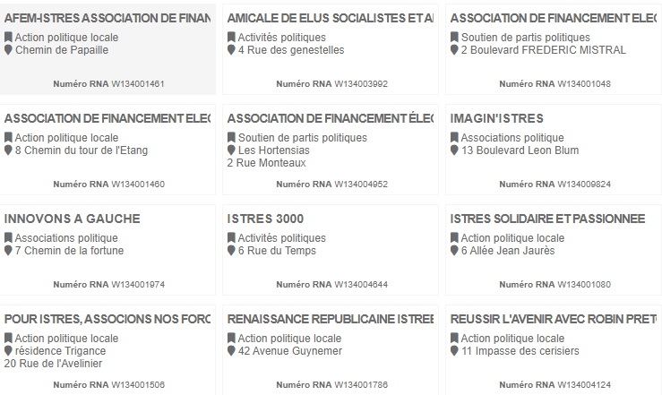

| Informations | |
| Population | 43 100 (en 2020) |
| Superficie | 113 km² |
| Densité | 380 hab par km² |
| Code postal | 13 800 et 13118 |
| Maire | Francois Bernardini |
Istres est une ville active et possède de nombreuses associations et institutions qui luttent pour le développement durable. Elle en compte environ 15. Voici les plus importantes :

Analyse du Plan Climat à Istres
De nombreuses mesures sont mises en place dans la ville d’Istres dans le cadre du plan climat.
La ville d’Istres place l’environnement au premier plan. Son engagement face à l’écologie se traduit par la
mise
en place de nombreuses mesures renforçant le développement durable.
Mobilité verte :
Les istréens sont encouragés au quotidien à se déplacer en limitant la pollution. En effet, aux entrées de
la
ville, on retrouve les parkings écomobilité, permettant aux conducteurs d’y garer leur voiture afin d’utiliser
un moyen de transport bien moins polluant comme le bus ou le vélo.
Depuis 2017, la mairie d’Istres met en place 80 primes/ans d’un montant de 150 euros à tous habitants
souhaitant
acheter un vélo électrique et 50 primes/ans d’un montant de 1500 euros pour l’achat d’une voiture
électrique.
Les propriétaires des voitures électriques pourront retrouver une vingtaine de bornes de recharge
principalement
dans le centre-ville d’Istres.
Tri sélectif :
Des points d’apports volontaires sont mis à disposition dans tous les quartiers et dans les déchetteries. Les
habitants peuvent y jeter leurs déchets préalablement triés dans les poubelles prévues à cet effet.
Des cendriers ont été installé dans différents lieux publics, les mégots sont récoltés par le service « Cadre
de
vie » pour ensuite être transféré vers une filière de valorisation.
Mise à disposition d’une application gratuite qui explique et facilite le tri sélectif.
Depuis le 22 septembre, en test pendant 3 mois, 5 corbeilles solaires autonomes à compactions connectées ont
été
installées. Leur système de compaction permettant de gagner de 5 à 9 fois le volume initial entraînant une
réduction des collectes.
Un mouvement écocitoyen de ramassage des déchets et de tri sélectif a été créé, ce qui est unique dans la
région.
Grande implication au niveau de la jeunesse, de nombreuses initiatives comme par exemple le “ défi Déchets”
qui
consistait à une virée kayak sur l’étang de l’olivier, d’équipes de trois jeunes, devant ramener le plus de
déchets.
Préservation et gestion des ressources naturelles :
Pour lutter contre les incendies, application stricte pour les particuliers de l’OLD (obligation légale de
débroussaillement), et en plus des travaux complémentaires seront demandés.
La commune à 2 étangs, celui de L’Olivier et celui d’Entressen, pour préserver la qualité de l’eau un plan de
gestion a été créé qui permet une vision à long terme et des actions immédiates pour valoriser et conserver
ces
espaces naturels.
Istres ville fleurie : le label 4 fleurs honore la ville depuis 1997. Il ne concerne plus que l'en
fleurissement
mais il touche 60 critères notamment toutes les actions en faveur de l’écologie.
Lutter contre la pollution :
Le “ dispositif Réponses” touche les 21 communes de l’arrondissement d’Istres. Il s’agit d’apporter des
réponses à toutes les préoccupations des habitants du pourtour de l’étang de Berre sur la pollution de l’air
et
la santé-environnement.
Tout d’abord une large concertation a eu lieu où les habitants ont pu exprimer leurs inquiétudes.
Cette plateforme fait participer les 4 acteurs majeurs que sont, l’état, les collectivités territoriales, les
industriels et les Associations et ses objectifs sont multiples.
- Surveiller et réglementer.
- Informer et sensibiliser.
- Agir et s’impliquer.
- Réduire les émissions de polluants.
- Améliorer la qualité de vie et la santé.
- Faire évoluer le territoire.
Préconisations
La pollution est un problème majeure tant à Istres et Saint-Mitre-Les-Remparts quand dans le reste du pays ou
même du monde. En 2019, à Istres, a eu lieu un conseil concernant les problèmes écologiques et les solutions
pouvant empêcher dégradation lié à l’environnement.
En effet, certains habitants se plaignent du taux de
patients atteint de cancer trop élevé et de la naissance d’enfant né avec des malformations, tout cela pourrai
être du, d’après les médecins, à une cause environnemental. La priorité est donc de limité et de réduire
l’emprunte écologique des habitants de Istres et de Saint-Mitre-Les-Remparts.
Voici quelques préconisations :
- Construction de pistes cyclables.
- Ajout de panneau solaire financé et utilisé par la mairie
- Organisation de « clean walk » dans les lieux les plus pollués